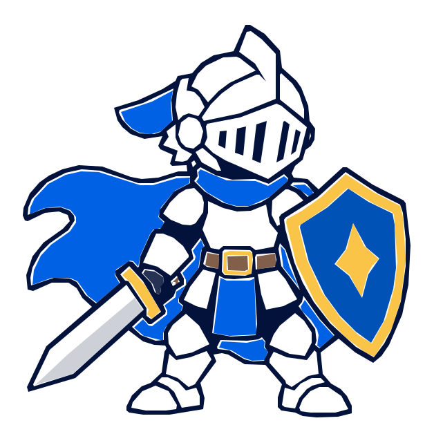

Draft PR #28・工程4。まず元PNG（a_clean_minimalist_vector_flat_cartoon_illustratio.png）を選択。選択した画像はブラウザ内だけで表示し、アップロードしない。
a_clean_minimalist_vector_flat_cartoon_illustratio.png

承認前の静止画検証用。盾の外形・剣先・兜・マントの輪郭と配色、白い隙間を確認してね。SVGの可動パーツ分割やゲーム組み込みはまだしていない。